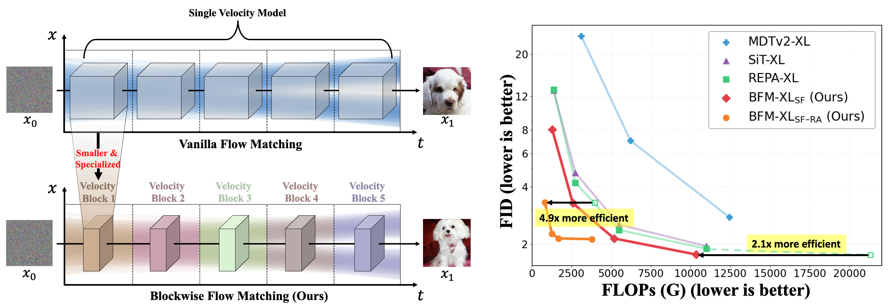
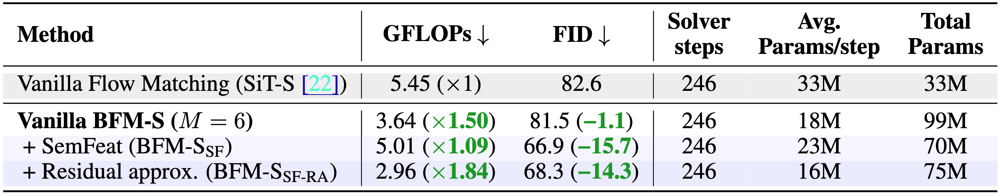
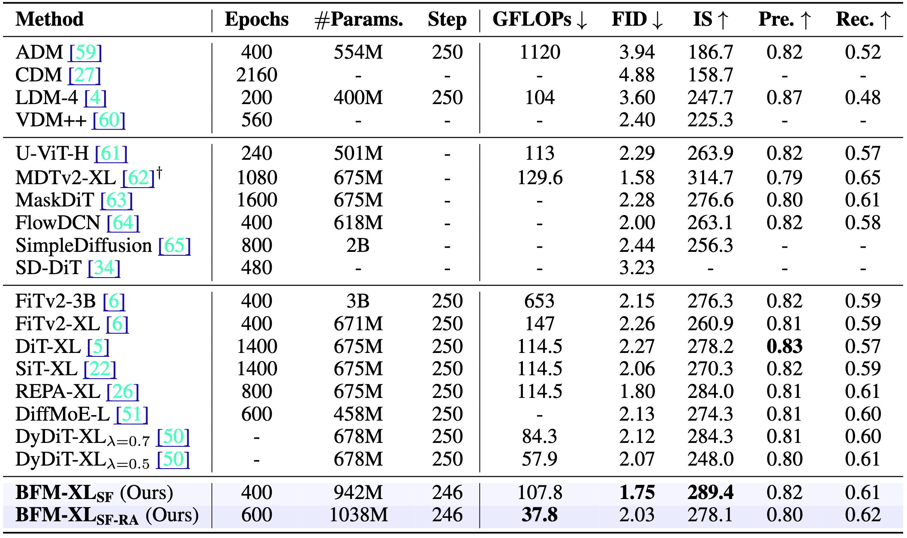
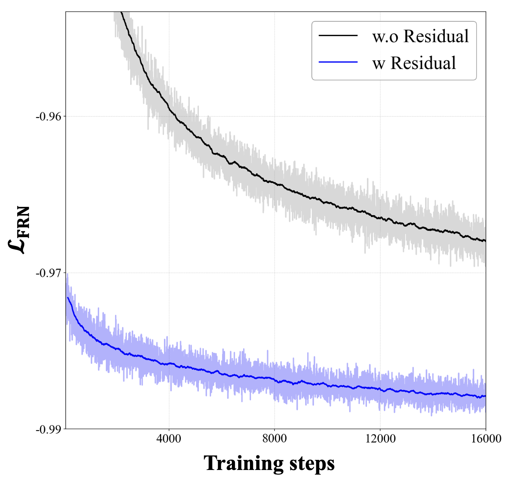

Dogyun Park1, Taehoon Lee2,
Minseok
Joo1,
Hyunwoo J. Kim2
1Korea University, 2KAIST

BFM establishes a
substantially improved Pareto frontier over existing
Flow Matching methods, achieving 2.1x to 4.9x accelerations in inference complexity at
comparable generation performance.
TL;DR: We propose Blockwise Flow Matching (BFM), a novel framework that partitions
the
generative trajectory into multiple temporal segments, each modeled by smaller but specialized
velocity blocks. This blockwise design enables each block to specialize effectively in its
designated interval, improving inference efficiency and sample quality.
Qualitative Results
(Hover over the image to magnify)
Generated samples from BFM-XL$_{\text{SF}}$ on ImageNet 256$\times$256 with classifier-free guidance ($w
=
4.0$).
Abstract
Recently, Flow Matching models have pushed the boundaries of high-fidelity data generation across a wide
range of domains. It typically employs a single large network to learn the entire generative trajectory from
noise to data. Despite their effectiveness, this design struggles to capture distinct signal characteristics
across timesteps simultaneously and incurs substantial inference costs due to the iterative evaluation of
the entire model. To address these limitations, we propose Blockwise Flow Matching (BFM), a novel framework
that partitions the generative trajectory into multiple temporal segments, each modeled by smaller but
specialized velocity blocks. This blockwise design enables each block to specialize effectively in its
designated interval, improving inference efficiency and sample quality. To further enhance generation
fidelity, we introduce a Semantic Feature Guidance module that explicitly conditions velocity blocks on
semantically rich features aligned with pretrained representations.
Additionally, we propose a lightweight Feature Residual Approximation strategy that preserves semantic
quality while significantly reducing inference cost.
Extensive experiments on ImageNet 256$\times$256 demonstrate that BFM establishes a substantially improved
Pareto frontier over existing Flow Matching methods, achieving 2.1$\times$ to 4.9$\times$ accelerations in
inference complexity at comparable generation performance.
Method Overview
Blockwise Flow Matching with Semantic Feature Guidance
Figure 1: Blockwise Flow Matching partitions the flow trajectory
into M segments, each modeled by a specialized velocity block $v^{(m)}_θ$ . Semantic Feature
Guidance
enhances the velocity block by explicitly conditioning features ft from the feature alignment
network $f_φ$.
Standard Flow Matching (FM) models train a single large network to model the entire trajectory from noise to
data, which leads to inefficiency and suboptimal performance due to the conflicting spectral characteristics
at different timesteps and high inference cost. To overcome these limitations, Blockwise Flow
Matching (BFM)
divides the overall trajectory into multiple temporal segments, each modeled by a smaller, specialized
velocity block. This blockwise design allows each block to focus on specific interval dynamics, reducing
computation and improving representation efficiency, as only the relevant block is evaluated at each
timestep.
Moreover, we propose Semantic Feature Guidance (SemFeat) that introduces a shared feature alignment
network $f_φ$ that
extracts robust semantic features $f_t$ from intermediate noisy states and aligns them with clean image
embeddings from
pretrained visual
encoders like DINOv2. These semantic features are then used to condition each velocity block. The final
training objective combines
the
blockwise flow matching loss and the semantic alignment loss. Our SemFeat approach
enriches
the velocity blocks' representations and improves the overall generative quality

, enabling semantically consistent generation across all temporal segments.
Feature Residual Approximation
Figure 2:(left): After training velocity models and $f_\phi$, we freeze them and train
the
Feature Residual Network (FRN) to efficiently approximate $f_t$ by a residual connection.
(right):
During inference, samples can be efficiently generated by evaluating $f_\phi$ once per segment, reducing
inference complexity.
While the feature alignment network $f_φ$ enhances generation quality through rich semantic guidance,
evaluating it at every timestep incurs substantial computational cost. To preserve efficiency, the Feature
Residual Approximation (FRA) introduces a lightweight Feature Residual Network (FRN), $f_η$, trained to
approximate the semantic features produced by $f_φ$ within each temporal segment. After freezing the
pretrained alignment and velocity networks, FRN learns to predict the residual evolution of semantic
features from the segment’s start feature $f_{t_{m-1}}$, scaled by a normalized offset $b_m(t)$. This design
enables feature updates to be computed incrementally and efficiently, requiring $f_φ$ to run only once per
segment. The FRN is trained via a feature regression loss to match the frozen alignment features.
Empirically, this residual approximation retains over
98% of the semantic fidelity of
BFM-S$_{\text{SF}}$ while cutting inference complexity by 41%
, offering a strong trade-off between quality and efficiency.
Results
Comparison with start-of-the-art methods
Table 1 compares our Blockwise Flow Matching (BFM) framework with recent state-of-the-art
generative models. The proposed BFM-XL$_{\text{SF}}$, enhanced with Semantic Feature Guidance, achieves the
best overall performance, attaining an FID of 1.75 and surpassing models such as FiTv2, DiT, SiT, and REPA.
With the addition of the Feature Residual Approximation (FRA) module,
BFM-XL$_{\text{SF-RA}}$ further enhances efficiency—achieving a 67% FLOP reduction (roughly 3× faster
inference) while maintaining high fidelity.

Table 1:System-level comparison on ImageNet 256$\times$256 class-conditioned
generation with
classifier-free guidance. FLOPs are averaged across the solver steps and number of samples.↓ and
↑ indicate whether lower or higher values are better, respectively. † use guidance
scheduling.
Analysis
SemFeat vs. REPA: To evaluate the effectiveness of our proposed Semantic Feature Guidance (SemFeat),
we compare it with the closely related REPA approach. Unlike REPA, which learns semantic alignment
implicitly within the velocity model, SemFeat employs an external feature alignment network that explicitly
conditions semantic features on the generative process. This modular design decouples representation
learning from generation, leading to more coherent and stable feature representations. A PCA-based analysis
of semantic features (See Figure 3 below) shows that SemFeat produces temporally consistent and semantically
meaningful embeddings across noise levels, whereas REPA’s features appear noisier and less stable.
Figure 3: PCA of semantic features from SemFeat and REPA.
Spectral analysis: To examine whether blockwise modeling encourages stage-specific specialization
during generation, we perform a frequency-domain analysis of the generated images. Using the 2D Fourier
power spectrum and azimuthal integration, we compare the mean spectral power distributions of real and
generated images to evaluate how well models reproduce spatial frequency structures. In Figure 4 below,
BFM-XL$_{\text{SF}}$
achieves a smaller Fréchet distance (0.049) from the real image
spectrum than SiT-XL (0.054), demonstrating better alignment with natural image frequencies. This result
validates our hypothesis that blockwise segmentation encourages distinct blocks to specialize in different
signal bands, improving spectral fidelity and overall image realism.
Figure 4: Fourier power spectrum of real images, SiT-generated images, and BFM.
Figure 5: Generated images from BFM without (left) and with (right) Residual
Approximation.
Effectiveness of FRA: To evaluate the feature residual approximation (FRA)
strategy, we compare it to a
direct feature prediction baseline that estimates semantic features independently without residual
connections, e.g., $\hat{f}_t=f_\eta(x_t, c)$. The residual
formulation converges faster and
achieves lower feature regression loss

$\mathcal{L}_{\text{FRN}}$,
confirming
that modeling semantic evolution as residual increments from the segment start point yields more stable
learning. Qualitative examples in Figure 5 below further show negligible perceptual differences, validating
FRA as a highly efficient yet faithful feature approximation method.
Conclusion
In this paper, we introduced Blockwise Flow Matching (BFM), a novel generative framework that
partitions the generative trajectory into distinct temporal segments, each handled by compact and
specialized velocity blocks. This design allowed each block to effectively capture the unique signal
characteristics of its interval, leading to improved generation quality and efficiency. By further
incorporating our proposed Semantic Feature Guidance and Feature Residual Approximation
modules, we demonstrated that BFM establishes a significantly improved Pareto-frontier between generation
performance and inference complexity on ImageNet 256$\times$256: 2.1$\times$ and 4.9$\times$
acceleration in inference complexity compared to the existing state-of-the-art generative methods.
Citation
If you find our work useful in your research, please cite it as:
@article{park2025blockwise,
title={Blockwise Flow Matching: Improving Flow Matching Models For Efficient High-Quality Generation},
author={Park, Dogyun and Lee, Taehoon and Joo, Minseok and Kim, Hyunwoo J},
journal={arXiv preprint arXiv:2510.21167},
year={2025}
}